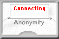

JonDo-Oberfläche Inhalt
JonDo-Oberfläche Inhalt  Bedienung
Mini-Ansicht
Bedienung
Mini-Ansicht JonDo-Oberfläche Inhalt Bedienung
Mini-Ansicht
 |
Ein solches Bild zeigt an, dass Sie erfolgreich eine Verbindung mit
einem Anonymisierungsdienst aufgenommen haben. Der Zeiger gibt Ihnen
Auskunft, wie sicher Ihre Anonymität auf dem Dienst
einzuschätzen ist, mit der sie gerade verbunden sind. Dieser Wert
ist abhängig von der Anzahl der gerade mit dem Dienst verbundenen
Nutzer und der Verteiltheit von Mixen und Betreibern dieses Dienstes.
Aus diesen Informationen kann ein teilweise subjektives Beobachtungsrisiko und eine maximal erreichbare Anonymität abgeleitet werden. Je mehr Nutzer aktiv sind und auch Nachrichten senden bzw. empfangen, um so größer ist die Anonymitätsgruppe jeder einzelnen ins Internet gesendeten Nachricht, da potentiell jeder Nutzer die Nachricht gesendet haben könnte. Besonders wichtig ist auch die Anzahl und Verteilung der Dienstbetreiber: je mehr Mixe in einer Kaskade stehen, und je weiter und internationaler diese Mixe und deren Betreiber verteilt sind, desto geringer ist die Wahrscheinlichkeit, dass der Benutzer von den Betreibern (oder von Dritten, welche die Betreiber dazu zwingen) beobachtet werden kann. |
 |
Dieses Bild erscheint, wenn Sie den Anonymitätsmodus ausgeschaltet haben. Sie können wietersurfen, müssen den nicht-anonymen Zugriff aber jeweils bestätigen. |
 |
Wird dieses Bild gezeigt, wurde eine Verbindung zum Dienst hergestellt und Sie können auch anonym surfen. Allerdings konnten vom InfoService noch keine Informationen über Anzahl der Nutzer und Verkehr geholt werden. Das kann an einem Fehler im InfoService liegen, an einer langsamen Internetanbindung oder einfach daran, dass Sie JonDo die automatischen InfoService-Anfragen verboten haben. |
|  | Während JonDo versucht, eine Verbindung zu einem Anonymisierungsdienst herzustellen, wird dieses Bild gezeigt. Währenddessen wird jede Verbindung ins Internet über JonDo blockiert. |